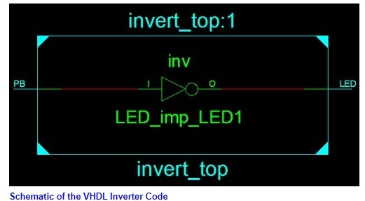

WHAT IS VHDL
VHDL is generally used to write text models that describe a logic circuit. Such a model is processed by a synthesis program, only if it is part of the logic design. A simulation program is used to test the logic design using simulation models to represent the logic circuits that interface to the design. This collection of simulation models is commonly called a testbench.
Making an Inverter in VHDL
An inverter is a logic gate that converts a logic level on its input to the opposite logic level on its output, i.e. a 0 on the input of an inverter will produce a 1 on its output; a 1 on the input of an inverter will produce a 0 in its output. Below is a listing of the VHDL code for the invert VHDL project and an explanation of various elements in the code. This is followed by information on how to create the project using the Xilinx tools. The VHDL code for creating an inverter is as follows, this is the code from the invert_top.vhd file:
library IEEE;
use IEEE.STD_LOGIC_1164.ALL;
entity invert_top is
Port ( PB : in STD_LOGIC;
LED : out STD_LOGIC);
end invert_top;
architecture Behavioral of invert_top is
begin
-- invert the signal from the push button switch and route it to the LED
LED <= not PB;
end Behavioral;
|
invert_top.vhd contains the following statements at the top of the file:
library IEEE; use IEEE.STD_LOGIC_1164.ALL; |
This includes the IEEE library in the VHDL design and specifies that all of the STD_LOGIC_1164 library package from the IEEE library will be used.
The entity describes the pins (or ports) used in the design:
entity invert_top is
Port ( PB : in STD_LOGIC;
LED : out STD_LOGIC);
end invert_top;
|
The above statements define an input pin called PB (our push-button switch) and an output pin called LED (this will connect to one of the LEDs on the board). The entity name in the VHDL file (invert_top.vhd in our example) has the same name as the VHDL file. In this example the entity name and file name are both invert_top. The name invert_top was chosen for this project but could be named anything else. When a new VHDL file is added to the project in the Xilinx software, it will automatically create the entity code in the file and name it after the chosen file name. VHDL files end with a .vhd file extension.
The architecture describes the circuit functionality. This is where the actual logic design is written in VHDL:
architecture Behavioral of invert_top is
begin
-- invert the signal from the push button switch and route it to the LED
LED <= not PB;
end Behavioral;
|
VHDL comments are started with two minus signs next to each other: -- Comments in the VHDL file are ignored by the software tools and allow the writer of the VHDL to include human readable comments and explanations in the VHDL file.
Every VHDL statement must be terminated by a semicolon: ; VHDL is not case sensitive so keywords and statements can be written in upper or lower case letters.
The actual VHDL code that describes the inverter is the single VHDL statement in the architecture part of the VHDL file:
LED <= not PB; |
This statement basically says "Invert the PB input pin and put the inverted result on the LED pin. The schematic equivalent of this statement is shown below.  The above code inverts the logic level on the PB pin by using the VHDL not keyword. It then assigns the inverted logic level to the LED pin using the VHDL assignment operator <= which places the inverted value on the LED pin.